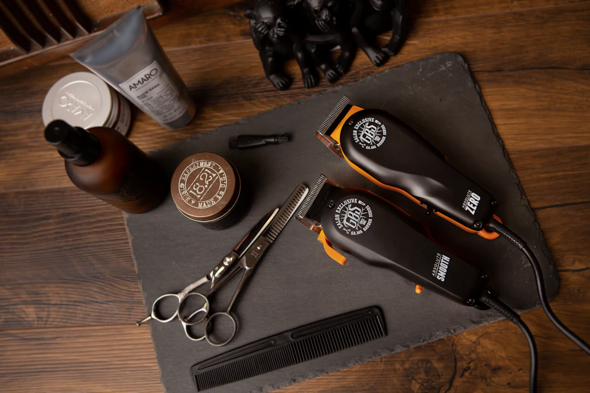

Escutar primeiro.
Entender o que você quer, como vive e o que espera do seu visual. A conversa faz parte do corte.
NOSSA ESSÊNCIA / MÃOS DE OURO
Um bom corte começa com escuta.
E continua em cada detalhe.
 O SEU ESTILO. EM BOAS MÃOS.
O SEU ESTILO. EM BOAS MÃOS.MUITO ALÉM DO ESPELHO
Na Mãos de Ouro, cada escolha respeita seu rosto, sua rotina e o jeito como você quer se apresentar ao mundo.
Unimos técnica e atenção aos detalhes para criar um visual que tenha a sua identidade. Sem pressa na conversa. Com precisão no acabamento.
Porque cuidar da aparência também é reservar um tempo para si. Uma pausa no dia, uma boa conversa e a sensação de sair pronto para o que vem pela frente.
Mãos de OuroO QUE GUIA NOSSAS MÃOS
Entender o que você quer, como vive e o que espera do seu visual. A conversa faz parte do corte.
O contorno, a transição, a finalização. Pequenas escolhas constroem um resultado com personalidade.
A referência é você. Técnica para valorizar seus traços e liberdade para ser quem você é.

RESERVE ESSE MOMENTO